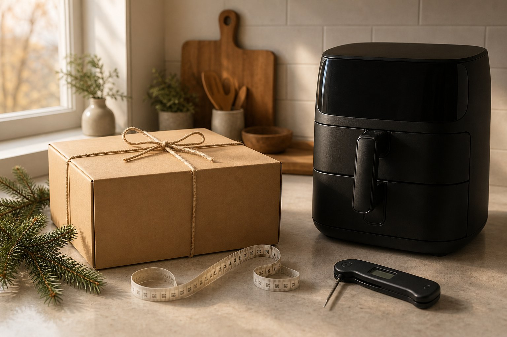

Home › Guides › Gifting an appliance in December: the fi…
Gift guide · Holiday 2026 · about 2 min of reading · checked 2026-11-20
Gifting an appliance in December: the five checks that decide whether it gets used
Appliances are the gift that either becomes the most-used thing in the kitchen or goes back in the box. The difference is rarely the appliance. It is whether the recipient's counter, cabinet and habits were measured before it arrived.
What we would do
Check the five lines on this page against the recipient's kitchen, in this order: depth, door swing, whether it needs a phone, what comes in the box, and the warranty sentence. If you cannot answer all five from the listing, you are gifting a chore.
01One: depth, not width
Depth is what disqualifies a counter, because the wall, the vent gap and the swing all live there. The three units in this category state 13.38 inches, 16.9 inches and 12.75 inches deep. The 16.9-inch unit opens with French doors, which need room in front as well as behind — a fact that is obvious in a kitchen and invisible on a spec sheet.
02Two: does the gift need a phone?
The CHEF iQ listing states its probes work over Wi-Fi and Bluetooth through the CHEF iQ app. For the right person that is the entire value: alerts across a yard, three probes, live temperature. For somebody who dislikes pairing devices, it is a gift with setup homework, delivered on a day they are busy. The instant-read in this category needs no app at all, which is its own kind of thoughtfulness.
03Three: what is actually in the box
Read the included-components line before you add accessories. The ThermoMaven listing lists the thermometer, one AAA battery, a user manual and a calibration certificate, so it works on arrival. The Emeril listing's accessories line is where its own page gets unclear: the title says six cooking accessories, the configuration and description fields say seven, and the included-components list names six. That is not a reason not to buy it; it is a reason to expect the box to differ from the page.
04Four: windows, light, and the thing nobody mentions
Two viewing windows are stated as a feature of the dual-basket unit; the 8-quart listing states none. A window is not a performance claim, it is a behaviour change: you look instead of opening. If the person you are buying for is the type who opens the oven every four minutes, buy the one with the window.
05Five: the warranty sentence, read exactly
The two Chefman listings state a one-year assurance and a one-year limited warranty. The CHEF iQ listing carries two figures on the same page — a two-year assurance in the bullets and a three-year warranty description in the details table — which we print rather than choose between. And the Emeril listing states no warranty line at all in the fields we read. A gift receipt outlives a lot of spec sheets; so does a screenshot of the page you bought from.
| Check | Where it is on the listing | Fail mode it prevents |
|---|---|---|
| Depth plus clearance | Measurements table | The return queue in January |
| Door or drawer swing | Title, configuration, images of the mechanism | A counter that cannot open |
| App dependency | Connectivity line in the bullets | A gift that needs a tech support call |
| Batteries and parts in the box | Included components | Present that does not work on the day |
| Warranty wording | Bullets and item details — check both | A promise nobody can find afterwards |

Why there is no price line here
Because Amazon's program policies govern who may display price and availability, this site shows none — the button on every product page opens the live listing, where the number is always current. See how we choose. For the fit questions behind this list, read measuring for a small kitchen and questions to ask before a multi-function appliance.
If this guide decided it for you
One line each on why you would pick it, and the caveat that comes with it. Every figure behind these lines is in the specification table on the product page, with its source.
-
Air Fryers · Chefman
Two baskets, two windows, one finish time
Choose it if two dishes have to land at the same time.
The catch: Two small baskets instead of one big one; 450 °F max, and the listing's own capacity field says 6 liters
-
Air Fryers · Emeril Lagasse
A countertop oven that happens to air-fry
Choose it if one appliance has to roast, toast and air-fry, and the counter is deep enough.
The catch: 16.9 in of depth plus French-door swing, item weight unstated on listing, and the listing contradicts itself on preset count and accessory count
-
Meat Thermometers · ThermoMaven
The one you keep in a drawer and grab
Choose it if you want a number in a second at the grill.
The catch: Accuracy and certification are seller claims, not independent test results; no walk-away monitoring
Every specification quoted above is from the official listing, dated 2026-11-20. See the source register for links, and the Flagged for Review page for the contradictions.